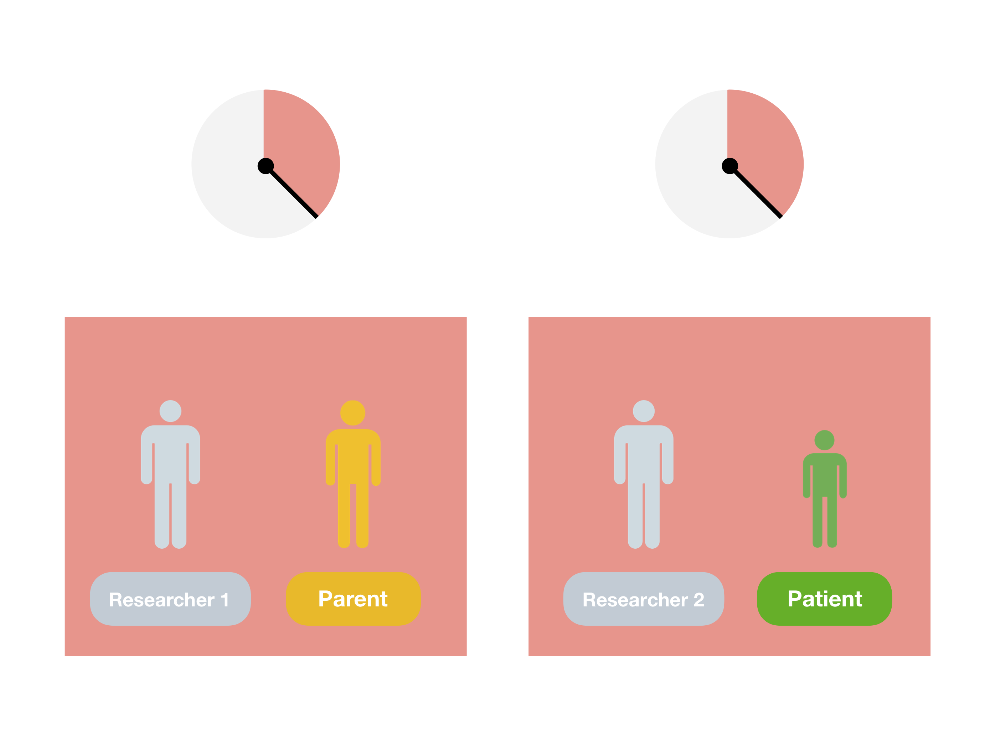
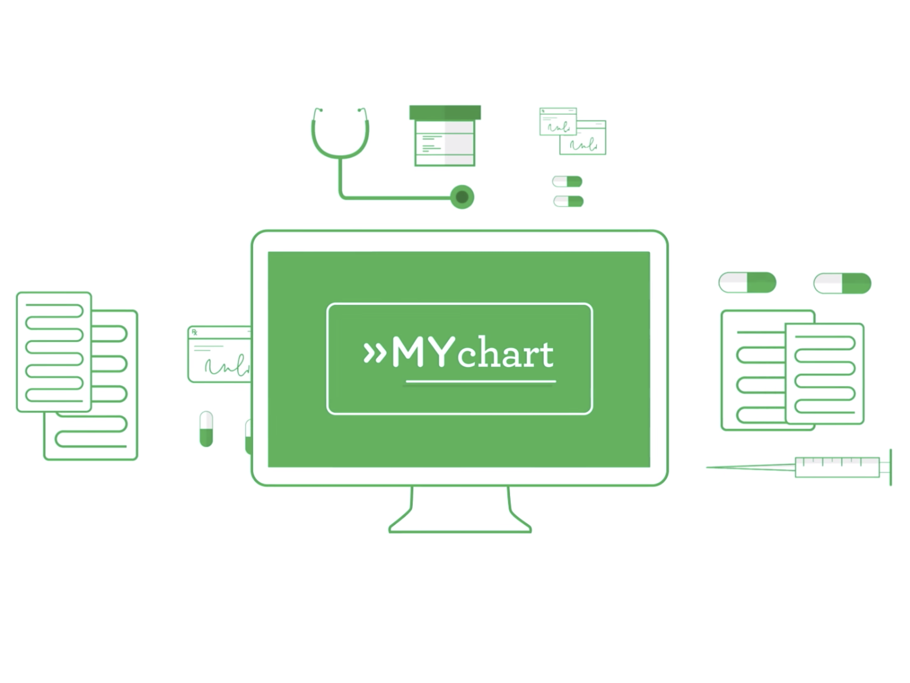

Care Partners: Understanding Patient Participation in Complex Pediatric Care
What barriers do adolescents face in their care, and how can technology help them overcome such barriers? In addressing these questions, my formative work surfaces nuanced tensions and perspectives among adolescent, parent and clinicians regarding patient access to data and their participation in care.
- Project Date: Oct 2014 - Mar 2016
- Affiliations: Georgia Institute of Technology and Children's Healthcare of Atlanta
- Funding: IPaT seed grant, NSF #1464214
- Collaborators: Daniel Machado, Clayton Feustel, Karen Wasileski-Masker, Thomas Olson, Stephen Simoneaux, and Lauren Wilcox
Background
Personal Health Records (PHRs) show promising opportunities to inform patients about their care and support patient-provider communication through secure means. Some states, including Georgia, began offering patient portal enrollment to teens ages 12 and up, with proxy access available to their parental caregivers or legal guardians. I partnered with CHOA's Cancer and Blood Disorders Center to conduct a two year investigation of chronically ill adolescent patients and family caregiver's health information management practices before and after they have used MyChart, a tethered PHR released by CHOA in Summer 2014.
Goal
The goal of this research is to understand challenges that chronically ill adolescent patients' face in their care and identify opportunities for technology to support their increased participation and independence in care.
Methods
- Field Observations
- Semi-structured interviews with 15 families
- Patient portal usage analysis (19 month observation period)
- Surveys
{kind=link}

I was able to uncover conflicting tensions between patients and their parental caregivers by conducting simultaneous, yet private interviews (with the help of a research assistant).
{kind=link}

I combined log analyses of the MyChart health record system at CHOA with surveys and interviews to contextualize user behavior from usage logs.
Key Findings
Adolescents' faced challenges participating in clinical conversations, communicating emotionally sensitive information, and managing physical and emotional responses. In particular, while patients downplayed their symptoms not to worry their parents, symptom reporting was often assumed by parental caregivers, even if the reported data may not adequately represent the patient's true felt experience.
MyChart was seen as being most useful during stages of diagnosis and treatment when patients and their parents were scheduled to visit the hospital. However, its contents were not tailored for young patients to review their data. For patients going through routine treatment, this means that there is opportunity for technology to proactively support their health management needs during active treatment cycles.
{kind=link}
These studies informed my decision to focus on the goal of accommodating patient and parent perspectives in symptom reporting by supporting their gradually evolving partnership through the design of a patient-friendly and engaging technology.